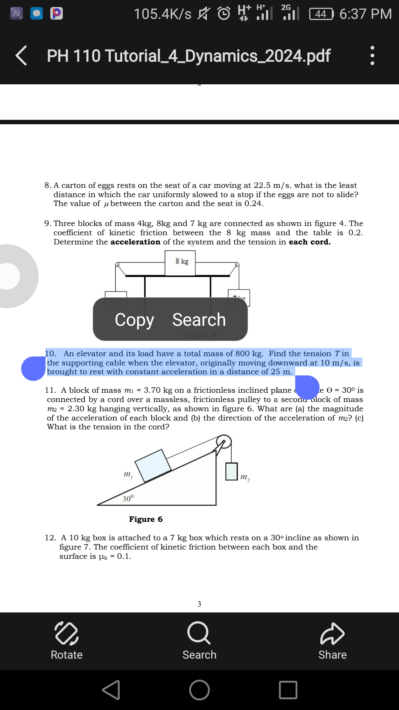
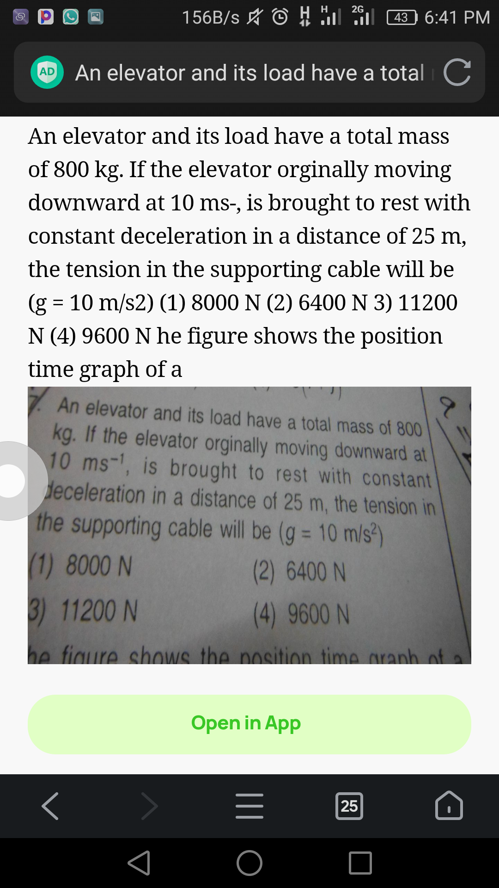
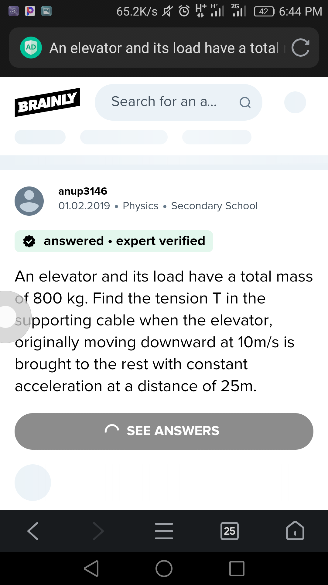

Its not always what a person may know the solution to some question, sometimes you have to seek the gods of the internet for help.
STEP 1:
copy the text of the question you want the answers to and search using any browser
STEP 2:
a bunch of site will come that may have solutions to the question you searched, look carefully to ensure that the values (if any) in your question the same as the one on the site
Below are some of the free sites where you can get correct answers;
toppr
homework.study
brainly
doubtnut

notice that under doubtnut not all the values of the question are the same.
☆ But there is one among all of them, and this one reigns supreme. Chegg
⇓ Below is a link to a video clearly explaining how you can get the solution from chegg. Tap me for the video